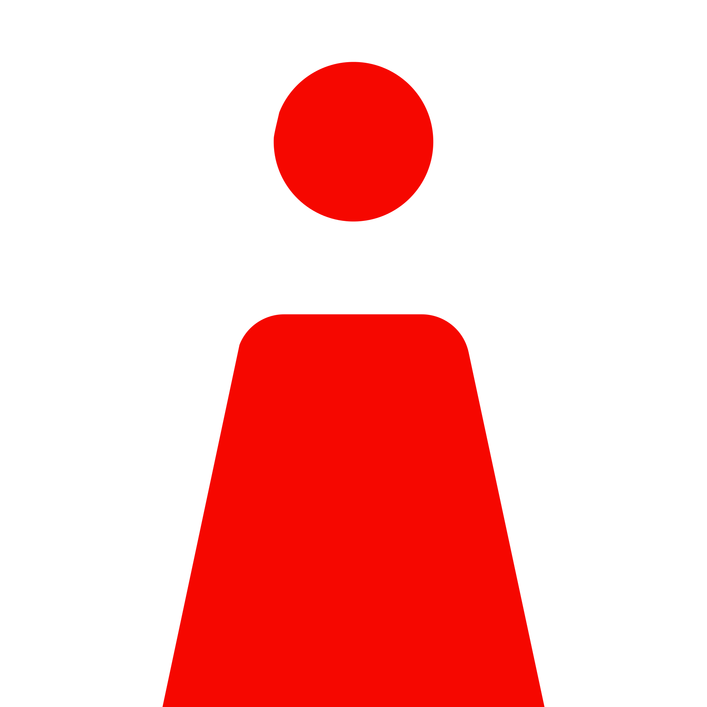

WikiQuestions
Digitise and publish past SSCE examination questions on wikiquestions.org, making them freely searchable and accessible to students across Nigeria. A laptop is a firm requirement for this track.
Laptop RequiredApplications for the 2026 Autumn Cohort are open. Deadline: July 20, 2026. Apply here.
The CFK Fellowship is a volunteer community for young Nigerians who want to do something that lasts. You will contribute to free educational resources, grow alongside people who genuinely care, and belong to a mission bigger than any single task.
The Fellowship is a long-term commitment to growth, service, and meaningful contribution. It is structured enough to develop you, and open enough to make room for who you actually are.
Every Fellow works within one of four tracks. Read each one carefully and think about where your skills and interests belong.
Digitise and publish past SSCE examination questions on wikiquestions.org, making them freely searchable and accessible to students across Nigeria. A laptop is a firm requirement for this track.
Laptop Required
Write free, openly available textbooks for Nigerian secondary school students preparing for WAEC, JAMB, and NECO. Currently focused on Mathematics, Physics, Biology, Chemistry, and Agric Science.
Textbook WritingHelp plan and run a high-fidelity legislative simulation set in the fictional Federal Republic of Mona. Designed to educate young Nigerians about governance, ethics, and civic responsibility.
Events and ProgrammeKeep everything running. Roles here span administration, finance, fundraising, social media, graphic design, video editing, and more. If your skills serve CFK's mission but do not fit neatly into the other three tracks, this is where you belong.
Multiple RolesEvery Fellow begins in the same place. What comes next depends on how much you put in.
The most intensive phase of your Fellowship. You are active within your track, attending workshops, Light Sessions, and weekly reflections. Fellows who complete this phase with genuine participation receive the CFK Foundation Cohort Certificate. At the end, you decide whether to continue.
Fellows who continue after the cohort remain at Foundation level for the rest of their minimum six months. Teams, bi-monthly Light Sessions, and your first Advancement Portfolio.
Consistent contribution, growing ownership, and emerging leadership. You take on more within your team and begin to support newer Fellows around you.
Strategic contribution, people development, and sustained impact. Senior Fellows are eligible for a Sabbatical to pursue a personal, impact-driven project outside CFK.
The highest level. A record of sustained leadership and long-term commitment to CFK's mission. Principal Fellows who eventually step away are honoured through a Distinguished Exit.
These are not promises handed to every Fellow. They are possibilities that open up when you show up consistently and with real intention.
Built through actual work on actual projects, not training exercises. You leave with a portfolio of things you genuinely built and contributed to.
The Fellowship's structure is designed to develop leadership over time, through advancing levels, growing responsibility, and mentoring others around you.
Fellows from across Nigeria working toward a mission that matters. The relationships built here tend to extend well beyond your active time with CFK.
Your contributions are documented in your own words through advancement portfolios. Your journey is recognised formally at every level.
The clarity from sustained reflection. The confidence that grows when you realise you have contributed to something that genuinely matters beyond yourself.
The CFK Fellowship Companion is a document we wrote with genuine care. It tells you everything about how the Fellowship works, what you can expect from us, and what we will expect from you. We recommend reading it before you apply.
Read the CompanionApplications for the 2026 Autumn Cohort are open now. The process is warm, not intimidating, and takes about 15 minutes.